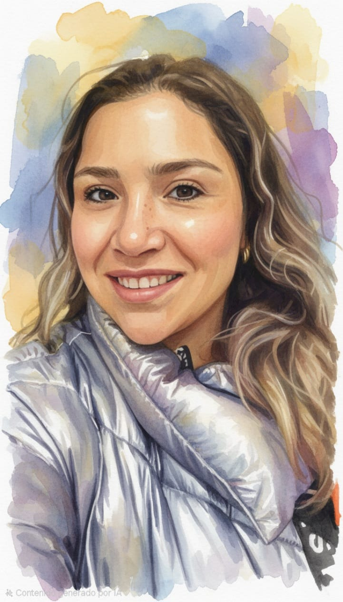
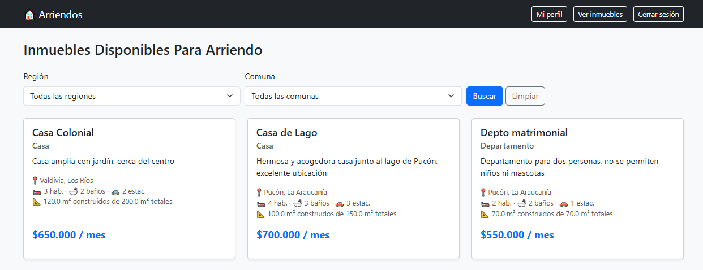

Backend
Python y Django para construir la lógica de la aplicación, la autenticación y los permisos de usuario.
Soy Pamela Veloso, Ingeniera Informática y Bioquímica. Desarrollo aplicaciones web con Python y Django, y llevo el rigor de la investigación científica a cada proyecto de software.

Vivo en Valdivia, Chile. Mi formación combina la bioquímica, la ingeniería informática y la investigación: actualmente curso un doctorado en Recursos Naturales Acuáticos en la Universidad de Valparaíso, donde estudio los condrictios (tiburones, rayas y quimeras) capturados como fauna acompañante en la pesquería artesanal de crustáceos demersales.
En paralelo, estudio el bootcamp de Desarrollo Full Stack Python de Talento Digital para Chile. Busco incorporarme a un equipo de desarrollo donde pueda aportar con aplicaciones web y análisis de datos.
Python y Django para construir la lógica de la aplicación, la autenticación y los permisos de usuario.
PostgreSQL y SQL para modelar datos relacionales y generar reportes con consultas JOIN.
HTML, CSS, JavaScript y Bootstrap para crear interfaces claras y adaptables a cualquier pantalla.
Apache Spark, AWS y redes neuronales para analizar datos y construir modelos predictivos.
Git y GitHub para versionar código, trabajar en equipo y publicar proyectos.

Aplicación web para publicar y gestionar inmuebles en arriendo. Tiene dos tipos de usuario, arrendadores y arrendatarios, con permisos distintos, y un CRUD completo donde cada persona solo puede editar o eliminar sus propias propiedades.
Incluye validaciones en los modelos y selectores dependientes de región y comuna.
Ver código en GitHubMi camino tiene dos vertientes que hoy se cruzan.
Hoy trabajo donde ambos caminos se cruzan: aplicaciones web que ordenan, analizan y explican datos.
¿Tienes una oportunidad o quieres conocer más de mi trabajo? Escríbeme por el medio que prefieras.